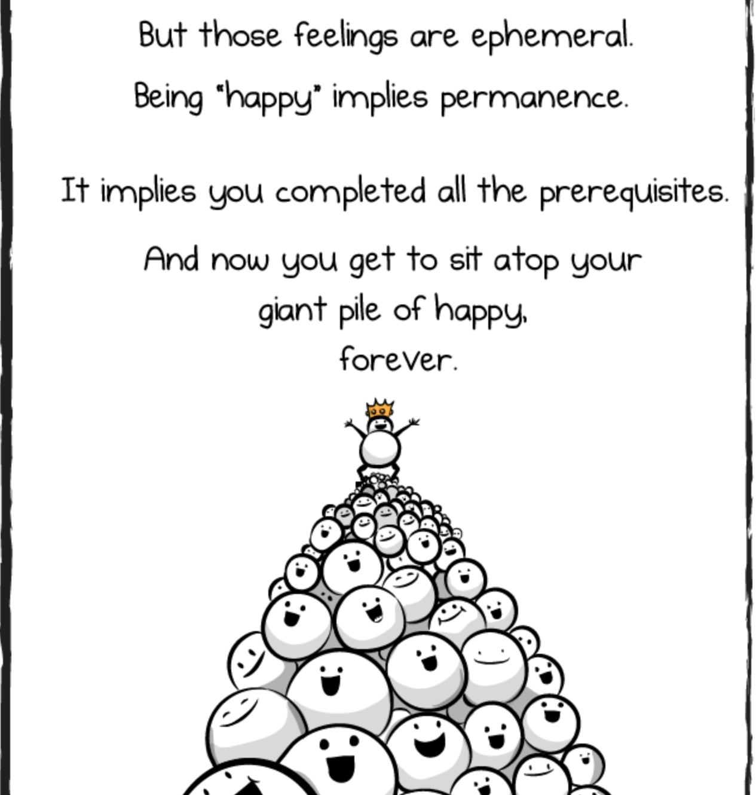

Dear Career Switchers: You are not a Failure
June 2 2019 • 10 min read
Image by Matthew Henry on Unsplash
Me and Failure Go Wayyy Back
For as long as I can remember, I’ve had a hard time with failure. My intense aversion to it was immortalized on my bedroom wall for most of my childhood in the form of an imperfect piece of artwork. I had been coloring in a ballerina Barbie from some coloring book or another when my hand slipped, a single crayon line extending outside the boundaries of Barbie’s body and into the clean expanse of the rest of the page. Immediately I wanted to throw the picture away, after all, my stray line had ruined it. But my parents caught me, insisting that the image wasn’t ruined and that this single mis-step didn’t make me a failure. They hung the image up to remind me that I could still be good at coloring even if I make mistakes. Throughout my life, I have had to learn and re-learn this lesson and in 2016 when I decided to switch careers, I had to learn it once again.

As a kid, the question you are asked by grown-ups the most seemed to be “What do you want to be when you grow up?”. I never struggled with this question. Ever since my Barbie-coloring days (or even sooner, perhaps), I had wanted to be a marine biologist. No one in my family can seem to remember exactly where this idea came from, but it’s clear that it stuck. It’s the only thing I had ever wanted to be and academically it was the goal I always reached for. Every time I didn’t live up to the insanely high academic goals I set for myself, I felt that my dream had been suddenly taken out of reach. That B on a math test in elementary school meant that I’d never do well enough to get into the high level high school classes which meant that I’d never get into a good college with scholarships to become a marine biologist. :flushed: It seems ridiculous now, but at the time a tiny failure seemed like it would spiral and spiral until all of the jenga blocks of my life had been knocked down.
Around this time, I started diving head-first into books to get out of my own head. I remember feeling that I finally saw myself in Hermione Granger, one of the main characters in the Harry Potter series. Aside from her total badassery, Hermione was a little awkward and bookish, and had serious anxiety about failure. In the third book, the students of Hogwarts have to face a boggart, a creature that hides in dark places and transforms itself into your worst fear. During her exams, she had to face the creature and it turned into one of her professors, telling her that she failed everything. This was the only part of her exam she stumbled on and canonically “it took a little while to calm [her] down.” Now that was something I understood.

Each time I hit a failure of sorts, it would take a long while to calm me down too. And again and again I had to re-learn that a single grade was not enough to mess up my dreams. After all, I had a whole year’s worth of grades that would combine together into an average for the year - thank goodness for averages! As I got older, this idea started to sink in and I became less obsessed with the grade on an individual test or even in an individual quarter. I began to forgive myself for making mistakes as long as I kept trying and working towards that marine biology goal.
I made it through high school and college. I still loved what I was doing and decided to stay on the academia track a bit longer and get a Master’s degree in Marine Sciences. Then all that was left was to get a job. This was so stressful, and if you’ve learned anything about me from this story, I’m sure you can guess that I felt like I’d never find a job ever. But, eventually, I did and it seemed like a dream come true.

I moved to Florida to work as a researcher in an aquarium. I got to learn about all sorts of marine creatures and then teach people about what I learned. It honestly seemed perfect and for around 3 years, I had convinced myself that it was. But, this perfect-ish job wasn’t perfect. One of its biggest detractors: it was contracted which means it came with an end-date and as the inevitable end drew nearer, I needed to figure out my next move.
I started thinking really critically about my life as a marine biologist and what I liked and what I didn’t. I found that I loved data analysis, data visualization, and explaining complex things in a simple way. I did not love living paycheck to paycheck, having a schedule that forced me to work every weekend, having my hard work end up in a silo, and feeling like my job needed to come before my personal life and well-being.
This was a hard pill to swallow because it meant that maybe this dream, the only one I’d ever had for my career, wasn’t so perfect after all. At first, I told myself that I could keep doing it. I could take that job that pays next to nothing, in a part of the country I didn’t want to move to, doing work I wasn’t interested in so that I could remain a :sparkles: marine biologist :sparkles:. It seemed like losing the title would be admitting that I had failed at my biggest dream. And in some very real way, it felt like I was losing a part of myself.
So You Feel Like You’ve Failed, Now What?
So I took a step back. How could I possibly be a failed marine biologist? I had done all the things. I got the degrees, I published papers, my resume has a whole section about the work I accomplished as a marine biologist. Is it really our intention that the only way to succeed in a career path is to do that thing forever? Is the only way to not fail as a marine biologist to continue down this path I started as a child until I die? And for maybe the first time in my life, I fully understood how ridiculous this sounded. Literally everything in our lives is always in flux. Things change with or without our approval so defining success on doing the same thing forever and ever just doesn’t make sense. The folks at The Oatmeal touched on this concept when describing how people are constantly searching for happiness like it’s an endpoint rather than a complex combination of emotions that are always changing.

Figure 1: Image from The Oatmeal’s ‘How to be Perfectly Unhappy’
I know it probably sounds like I had a moment of clarity and zen and was suddenly cool with leaving the world of marine biology behind. But old habits die hard and I second-guessed myself at every turn. After all, deciding to leave a field and telling myself that this decision didn’t make me a failure is very different than not feeling like a failure. The feeling was intensified because I didn’t know where to go next. Here’s where stories come to the rescue again. I was reminded of a scene in Lewis Carroll’s Alice’s Adventures in Wonderland. Alice is wandering around completely lost when she bumps into The Cheshire Cat.
“Would you tell me, please, which way I ought to go from here?”
“That depends a good deal on where you want to get to,” said the Cat.
“I don’t much care where-” said Alice.
“Then it doesn’t matter which way you go,” said the Cat.
“-so long as I get SOMEWHERE” Alice added as an explanation.
“Oh, you’re sure to do that”, said the Cat, “if only you walk long enough”.
Basically, I had no destination, so it didn’t matter how I got there, but if I started down some path, I was sure to eventually reach somewhere. That may sound discomforting to some, but not having to make a firm decision on what exactly my next career would be helped because it opened me up to so many more possibilities. I knew I wanted to do something with data because that was the part of my marine biology job that kept me interested and excited to learn more and because “data” was broad enough that I had lots of potential paths to choose from. So data was my starting point.
One of these days I’ll write a separate post about how I actually went about transitioning from marine biology to my current role as a “senior journalist engineer”, but for the sake of this story, the relevant parts are that during the transition, I often felt like a failure. Career-switching is hard and imposter syndrome is real and the learning curves can be steep and sometimes seemingly insurmountable. But you can get there. And if you don’t know where “there” is, try to start doing things that interest or engage you, that’s sure to lead you somewhere.
Things that Kinda Sorta Helped Me Feel Like Less of a Failure
For me, a strong support system (both in person and online – shoutout to the #rstats folks on Twitter :raised_hands:) was invaluable in pulling me through my career transition. During that time I hit some stumbling blocks and in true Hermione-fashion, I took a long while to calm down. But it wasn’t a failure, at least, not on the grand scale. For reference, I ended up “killing” the first story I worked on for The Pudding because it just wasn’t very interesting. And this felt like it would be a new-path-killer as well, but in the end it (and many others) were slight mistakes, like coloring outside the lines or failing a single test, that just helped me learn how to do better next time.
The road from one career to another was hard and scary, but I consider myself to be very lucky. My new role gives me so much more freedom and I’m much happier and healthier than I was, something I did not always imagine to be possible.
So if you’re currently going through a career change, I want you to hear the words that helped me: You are not a failure for leaving your last career. It doesn’t matter why you left. You are brave for trying something new and you can do it.
If you’re looking for more, here are a few other things that I have found particularly helpful:
Hank Green’s 2014 XOXO talk. “You have no obligation to your former self.”
This quote from Justin Reynold’s novel The Opposite of Always which has nothing to do with career switching but is absolutely charming and wonderful and talks a lot about the ideas of “almost” getting things and failure.
“… almost doesn’t have to be a bad thing. You can try your hardest to change something - exhaust every possibility - and sometimes it’s still not enough. But almost means you were there. You did all you could.”
One more thing:
This post reflects my personal experiences in career-switching and I recognize how lucky and privileged I am to even have this story to tell. I couldn’t have done this without lots of support from my family, friends, and my partner, Parker. If I can now use some of that luck/privilege from this side of the “career-switching” door to help hold it open for you, let me know. I’ll do my very best to help. :sparkling_heart: